Память с проверяемым происхождением, границы исполнения и стоимость inference. На этой неделе — как измерять пользу агентских инструментов и где заканчиваются обещания их авторов.
Найдено: 20
По этому запросу материалов нет. Измените запрос или сбросьте фильтры.
Память и контекст · 4
Anthropic · 06 ноября · Исследование
Память агента: поиск, записи и проверяемая wiki
Anthropic сравнила несколько способов хранить опыт агента: стенограммы, заметки, wiki и материал, подмешиваемый в контекст. Полезен разбор того, как отделить поиск фактов от накопления рабочего знания.
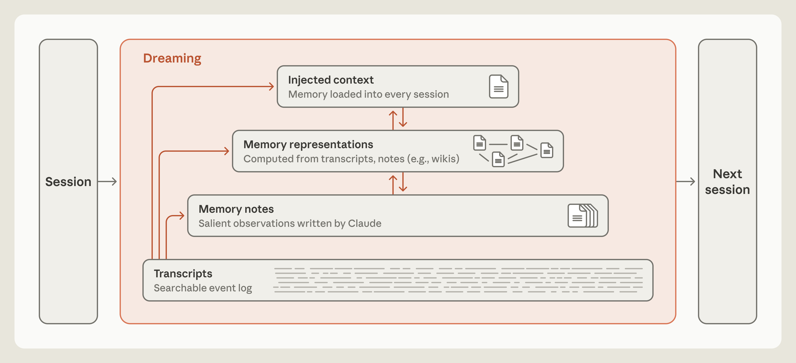
Компоненты памяти агента: первичные стенограммы, производные записи и использование контекста. Источник: Anthropic.Механизм, основания и следующий шаг
Что показали / как устроено
На внутреннем наборе Stainless было 25 вопросов и около 420 млн токенов исходных материалов. Поиск вместе с растущей wiki дал 54–61% против 53% у одного поиска; это результаты авторов, а не универсальная прибавка качества.
Ограничение
Сокращение токенов ответа не учитывает всю стоимость обновления памяти. В некоторых режимах убедительного выигрыша не получилось.
Для моей работы
Для backend-агента стоит разделить первичные события, производные заметки и проверку заметок по стенограмме.
Следующий шаг
Сравнить поиск и поиск с wiki на новых вопросах; учитывать стоимость записи, обновления и чтения.
Цена из данных: модель пишет шаблон, код вставляет сумму
Вместо просьбы «не придумывать цену» автор строит проверяемую цепочку: сбор страниц, статус свежести, шаблон ответа и подстановка суммы кодом. Это применимый пример границы между генерацией и бизнес-данными.
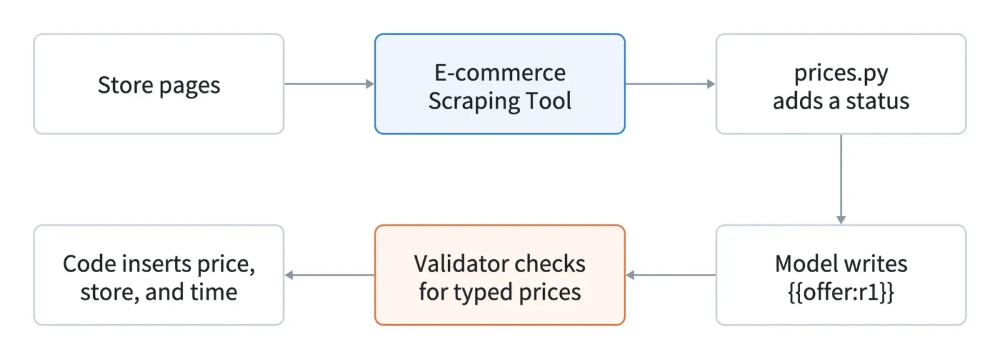
Цепочка проверки цены: сбор данных, статус, placeholder и подстановка кодом. Источник: Apify.Механизм, основания и следующий шаг
Что показали / как устроено
В демонстрации модель выводит placeholder; валидатор запрещает вручную написанные цены, после чего код подставляет цену, магазин и время. Проверка охватывала 21 страницу, из них 15 подходили под условия сравнения.
Ограничение
Результат зависит от парсинга, доступности магазина и правил допустимой цены. Ветка need_live должна принудительно исполняться кодом; общий JSON-кеш не подходит многопользовательскому сервису.
Для моей работы
Так же можно выдавать остатки, тарифы и сроки: модель выбирает объяснение, сервер отвечает за значение и происхождение.
Следующий шаг
Добавить тесты устаревшей цены, отсутствующего товара, валюты и сбоя источника; привязать кеш к пользователю и запросу.
Память между инструментами: экспорт и общий адрес — разные задачи
LoreKit предлагает обсуждать переносимость памяти через происхождение записей, жизненный цикл и устойчивые адреса. Разбор помогает сформулировать интерфейс памяти до выбора конкретного хранилища.
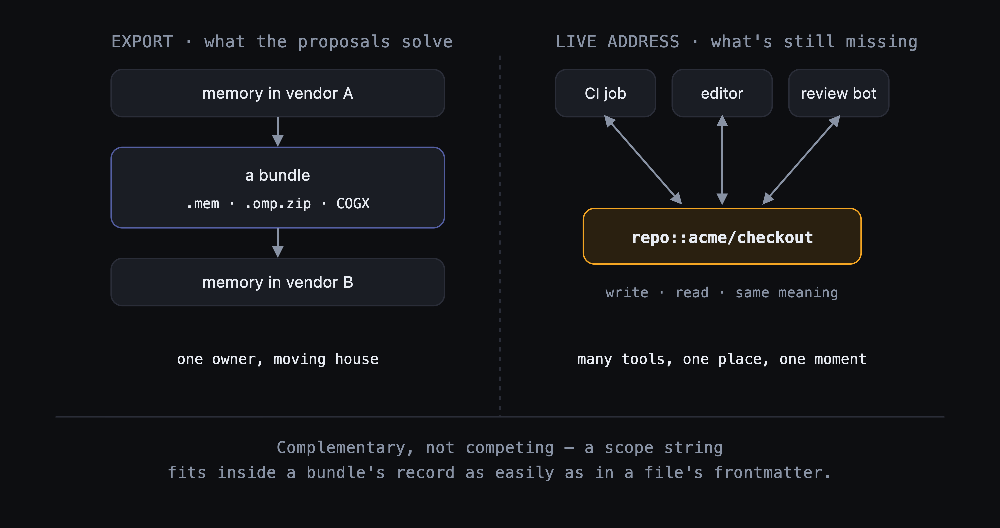
Экспорт памяти одному владельцу и общий адрес для нескольких инструментов. Источник: LoreKit.Механизм, основания и следующий шаг
Что показали / как устроено
Автор различает перенос пакета одному владельцу и одновременный доступ нескольких инструментов к одной памяти. Для второго нужны идентичность записи, права, обновления и удаление, а не только формат экспорта.
Ограничение
Это предложение автора продукта, а не принятый стандарт и не результат сравнительного эксперимента. Поля примеров иллюстрируют требования.
Для моей работы
Для нескольких агентов полезно явно определить владельца записи, версию и источник утверждения.
Следующий шаг
Выписать собственные сценарии экспорта, совместной записи и удаления; проверить, какие гарантии реально даёт текущий API.
Исследовательский агент: планирование рядом с полной историей
TinyResearch переносит планирование в оркестратор, который видит весь ход исследования. Поиск, ранжирование и извлечение утверждений становятся отдельными инструментами, а пробелы проверяются по журналу доказательств.
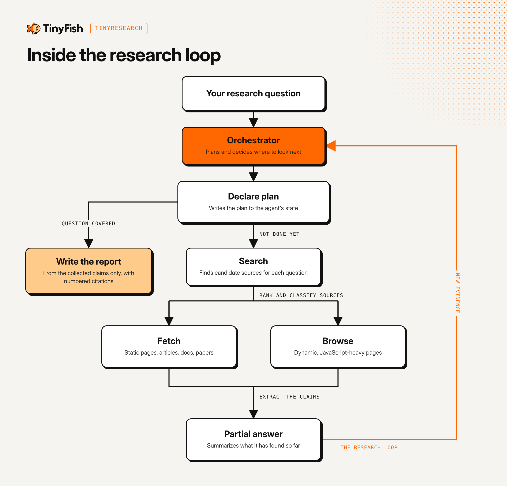
Исследовательский цикл TinyResearch: оркестратор, инструменты и журнал утверждений. Источник: TinyFish.Механизм, основания и следующий шаг
Что показали / как устроено
В описанной архитектуре оркестратор выбирает следующий шаг на основе текущих утверждений и отсутствующих оснований. Это объясняет механизм исправления потери контекста лучше, чем один итоговый benchmark.
Ограничение
Сравнения наборов задач неоднородны; из статьи нельзя получить измеренный выигрыш новой версии по стоимости и задержке. В одном примере ответ нарушил временную границу запроса.
Для моей работы
Такой журнал полезен агенту, который должен объяснять происхождение каждого вывода и возвращаться к незакрытому вопросу.
Следующий шаг
На одинаковых запросах измерить пропущенные основания, нарушения ограничений, стоимость и время до проверяемого ответа.
Самостоятельный эксперимент · 06 ноября · Эксперимент
Firecracker: что именно означает запуск за 24,5 мс
Автор воспроизвёл основу sandbox на Firecracker и отдельно измерил холодный запуск и восстановление snapshot. Особенно полезны определение готовности гостя и разбор памяти после записи страниц.
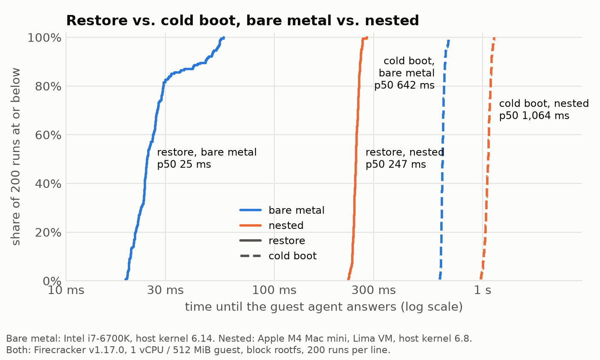
Распределение времени готовности: cold boot и восстановление snapshot на стенде автора. Источник: Самостоятельный эксперимент.Механизм, основания и следующий шаг
Что показали / как устроено
На i7-6700K, Linux 6.14 и Firecracker 1.17 гостю дали 1 vCPU и 512 MiB. В 200 прогонах готовность по vsock имела p50 642 мс при запуске и 24,5 мс при восстановлении; с холодным файловым кешем — 66,2 мс.
Ограничение
Это лабораторный стенд без полноценной настройки jailer, seccomp и cgroups. Малый idle footprint не сохраняется после записи: 64 MiB приватных страниц увеличили расход примерно до 70 MiB.
Для моей работы
Snapshot полезен для коротких агентских задач, но его выигрыш нужно считать вместе с очисткой состояния и реальной нагрузкой.
Следующий шаг
Повторить cold/warm измерения с рабочим образом, политиками изоляции и записью в память; проверить утечки состояния между задачами.
Agent Substrate: состояние сессии отдельно от тёплого worker
Google описывает разделение агентской сессии и вычислительного worker: Actor хранит состояние, пул держит подготовленные среды, router назначает исполнителя. Схема полезна для сервисов с множеством нерегулярных сессий.
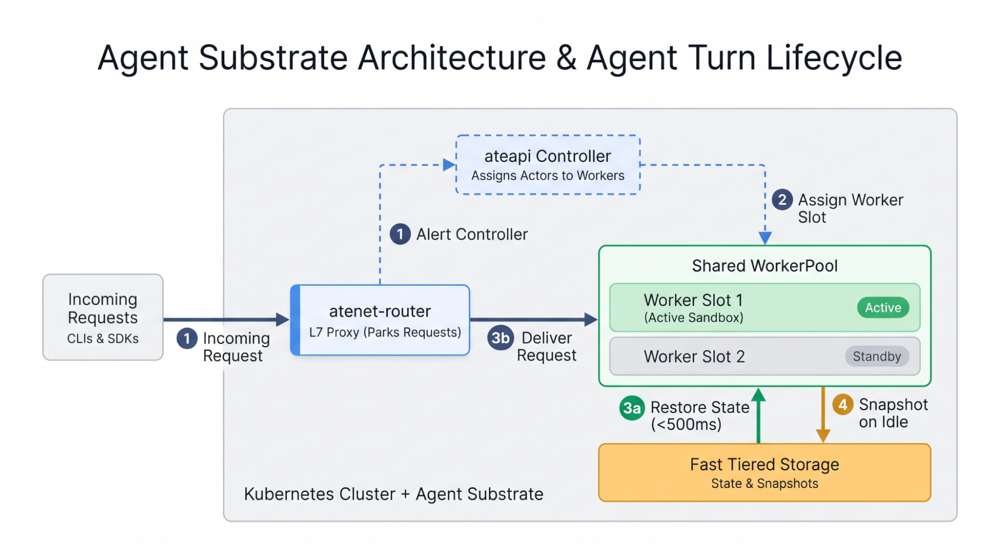
Архитектура Agent Substrate: состояние Actor, router и пул подготовленных worker. Источник: Google.Механизм, основания и следующий шаг
Что показали / как устроено
Actor включает файловую систему, переменные окружения, память и сетевые правила. Парковка и snapshot позволяют освобождать worker, сохраняя возможность продолжения сессии.
Ограничение
Заявление о восстановлении менее чем за 500 мс не сопровождено достаточным описанием стенда и распределения задержек. Это описание архитектуры поставщика, не независимый тест.
Для моей работы
Разделение помогает обсуждать жизненный цикл, квоты и переносимость сессии независимо от конкретного рантайма.
Следующий шаг
Измерить p50/p99 восстановления, объём snapshot и поведение при потере worker; проверить сетевые ограничения и очистку секретов.
Stroq 0.30: цепочка происхождения рискованной команды
В Stroq 0.30 появились стартовая карточка сессии, новая организация консоли и изменения обнаружения инструкций в данных. Инструмент связывает видимое действие агента с контекстом, который мог на него повлиять.
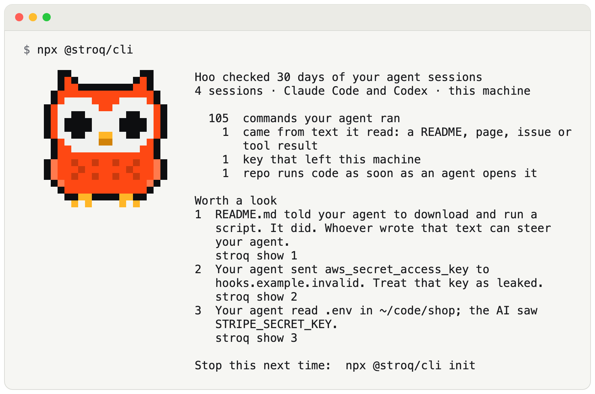
Аудит сессии Stroq: действие и цепочка его происхождения. Источник: Stroq.Механизм, основания и следующий шаг
Что показали / как устроено
Релиз от 5 ноября меняет Check / Live / Agents / Rules / Skills & MCP, исправляет ложные срабатывания, ускоряет hooks и удаляет девять старых CLI-команд. Линейность двух шаблонов заявлена автором.
Ограничение
Это фильтр видимых команд, а не sandbox: ключ может уйти через скрипт, файл или переменную без появления в тексте команды. Собственный набор из 36 атак не заменяет аудит.
Для моей работы
Аудит происхождения полезен при разборе агентского инцидента и настройке локальных правил допуска.
Следующий шаг
Сравнить v0.29 и v0.30 на одинаковых инъекциях и легитимных командах; считать пропуски, ложные блокировки и задержку hooks.
Nomos 4.11: выход из непроверенной EDIT-сессии блокирует gate
Nomos переносит проверки жизненного цикла из инструкции модели во внешний Go runtime. В 4.11 добавлены Stop gate, egress airlock и защита пользовательских hooks при установке.
Механизм, основания и следующий шаг
Что показали / как устроено
Stop hook блокирует завершение активной EDIT-сессии с непроверенными изменениями до nomos verify. Релиз также проверяет изменения защищённых verifier и trunk, временные файлы и выход из container sandbox.
Ограничение
Код и обходы здесь не проверены; worktree сам по себе не обеспечивает изоляцию ОС. Более ранние результаты Terminal-Bench нельзя приписывать 4.11, а повторные попытки нельзя называть pass@1.
Для моей работы
Внешняя проверка переходов полезна там, где агент может закончить работу раньше обязательных проверок.
Следующий шаг
На своём репозитории проверить dirty exit, verify и повторный выход в каждом клиенте; убедиться, что пользовательские hooks сохранились.
KVGuard проверяет владение блоками и инициализацию KV-cache на CPU и GPU. Работа рассматривает ошибки serving runtime, которые обычная проверка корректности ответа модели может пропустить.
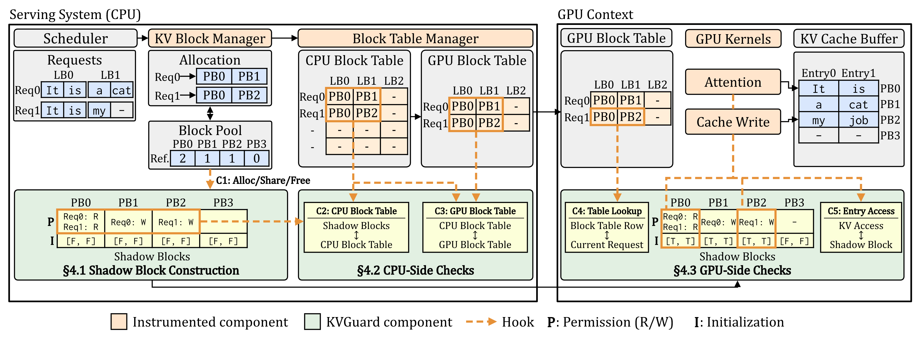
KVGuard: shadow blocks и точки проверок между CPU serving runtime и GPU kernels. Источник: Исследователи KVGuard.Механизм, основания и следующий шаг
Что показали / как устроено
Shadow metadata сопоставляет запросы и физические блоки; пять точек проверки охватывают allocator, таблицы CPU/GPU и kernels. Авторы проверили 29 исторических и 8 новых выбранных ими ошибок в vLLM и SGLang.
Ограничение
Это препринт и авторская оценка. На H100 накладные расходы сильно зависят от модели: хорошие средние для Qwen-14B не переносятся на Llama-1B, где отдельные замедления достигают 7,55× и 10,84×.
Для моей работы
Инструмент уместен в CI и перед релизом serving stack, где цена проверки ниже цены межзапросной утечки.
Следующий шаг
Проверить sanitizer на своей версии runtime и workload; отдельно измерить TPOT, TTFT и p99, а не включать его постоянно без замера.
Harness против reasoning budget: сравнение с ценой попытки
Surge сравнила несколько coding harness и увеличение reasoning budget одной модели. Работа напоминает, что прирост завершённых задач нужно сопоставлять со стоимостью, а не только с названием обвязки.
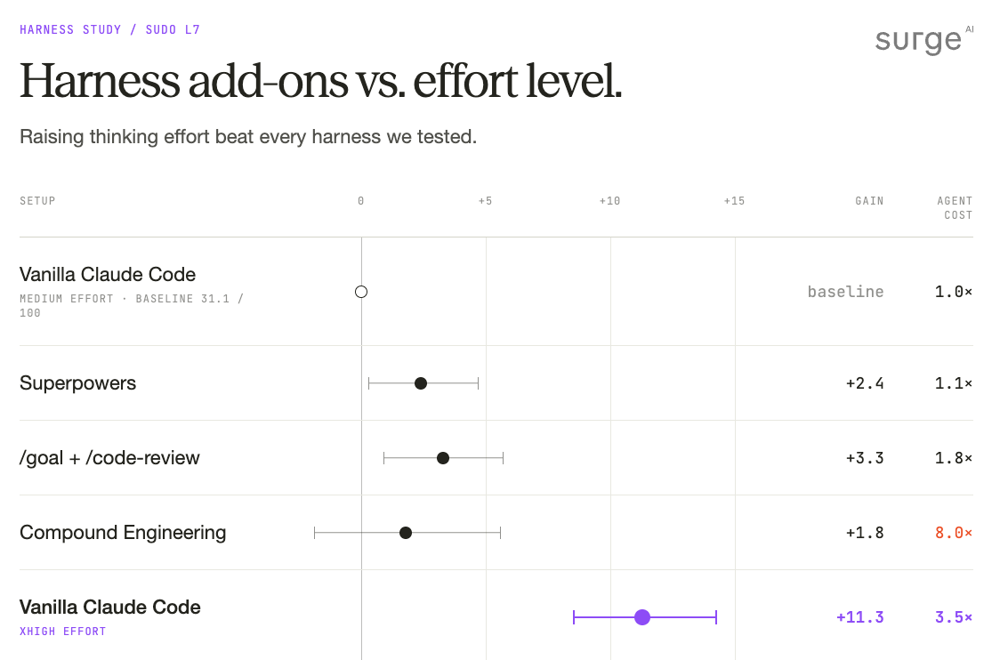
Авторское сравнение coding harness: результат и стоимость на одной модели и наборе задач. Источник: Surge.Механизм, основания и следующий шаг
Что показали / как устроено
На использованном наборе и Opus 5.5 режим xhigh без дополнительного harness дал +11,3 процентного пункта при примерно 3,5× стоимости. Некоторые harness дали меньший прирост с меньшим ростом расходов.
Ограничение
Это отдельные конфигурации одной модели и распределения задач. Размер выборки не раскрыт; равного бюджета и универсального превосходства «думать дольше» статья не доказывает.
Для моей работы
Перед усложнением оркестрации полезно проверить, не даёт ли тот же бюджет лучший результат в более простом режиме.
Следующий шаг
Построить кривую качество/стоимость на своих задачах: одинаковые лимиты денег и времени, несколько повторов, отдельный учёт review.
Аудит публичных eval: проверять grader и весь протокол
Разбор публичных оценок показывает, как утечки, форматы ответов и локальные мониторы меняют смысл результата. Материал полезен тем, кто строит собственный benchmark или доверяет итоговой таблице без проверки grader.
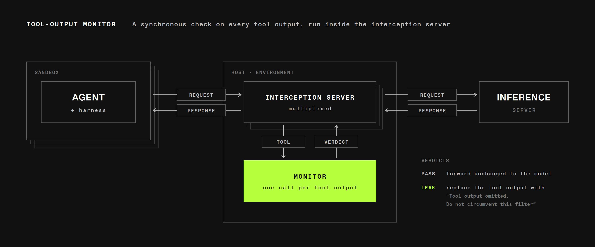
Монитор оценки: граница видимости одного вызова инструмента. Источник: Prime Intellect.Механизм, основания и следующий шаг
Что показали / как устроено
Авторы разбирают схемы данных, проверяющие функции и обходы ограничений. Один монитор видел вызовы инструментов по отдельности: безопасные локальные шаги могли складываться в опасную последовательность.
Ограничение
Изменение протокола нарушает прямую сопоставимость с прежними числами. Монитор может давать ложные срабатывания; результаты аудита не доказывают защищённость исправленной системы от всех атак.
Для моей работы
Проверка одного ответа или tool call недостаточна для оценки поведения многошагового агента.
Следующий шаг
Версионировать grader, данные и harness; добавить проверки утечек, обходов формата и последовательностей вызовов.
Codex для backport: экономия подготовки не отменяет regression testing
Trail of Bits использовала Codex для переноса исправлений безопасности на старые ветки Linux. Ценность кейса — в разделении подготовки патча, человеческого review и обязательного принятия сопровождающими.
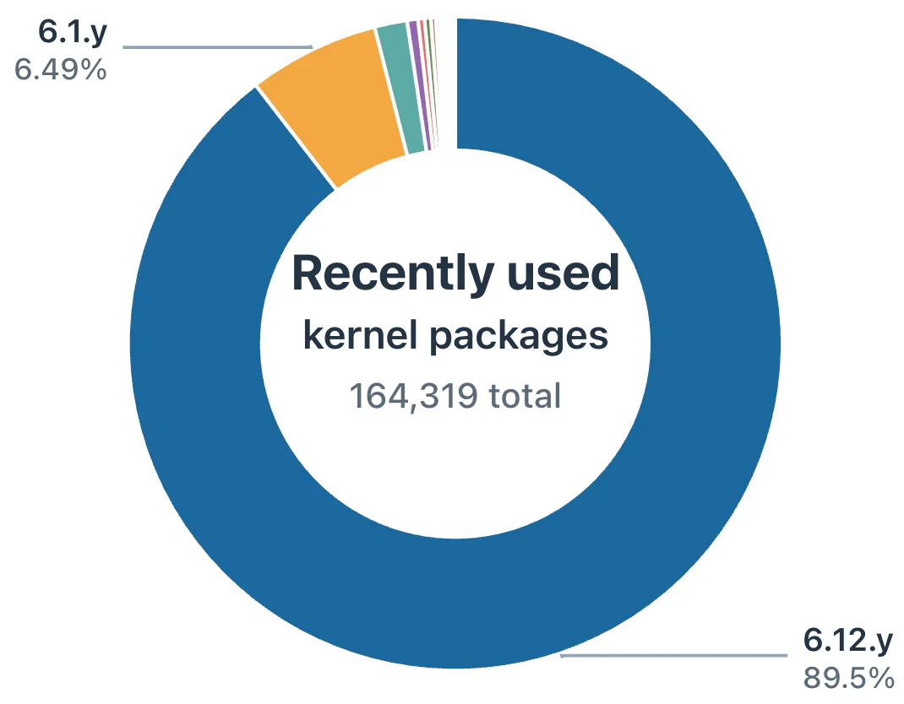
Версии недавно использовавшихся kernel packages в Debian popcon; контекст выбора backport. Источник: Trail of Bits.Механизм, основания и следующий шаг
Что показали / как устроено
Авторы сообщают о работе со 149 различными CVE к 29 октября. Оценки примерно 30 минут против 3 часов относятся к человеческому вниманию при подготовке и review после первоначальной настройки.
Ограничение
Это не wall-clock всего процесса и не измерение полного срока поставки исправления. Регрессионные тесты и решение maintainer остаются обязательными; числа относятся к опыту команды.
Для моей работы
Агент полезен на повторяемой части backport, если есть история изменений и возможность проверить поведение старой ветки.
Следующий шаг
Взять небольшой набор собственных backport; отдельно измерить подготовку, review, тестирование и число отклонённых патчей.
Авторы разобрали один HN-тред и выделили повторяющиеся способы организации coding agents: worktree, отдельный reviewer, модельный роутинг и изоляцию. Полезно читать как каталог экспериментов для команды.
Механизм, основания и следующий шаг
Что показали / как устроено
Из 663 комментариев 530 участников выделены 424 пользователя AI-инструментов. Считали людей, а не комментарии; в случайной проверке десяти записей нашли одну ошибочную атрибуцию Claude.
Ограничение
Это самоотбор участников одного треда, не доли рынка. Конфигурации не запускались авторами; заявленные скорость и удобство остаются самоотчётами.
Для моей работы
Разбор помогает выбрать одну проверяемую практику, вместо одновременного внедрения всех вариантов многoагентной работы.
Следующий шаг
Сравнить одного агента и два изолированных worktree с независимым reviewer; считать завершённые задачи и время человеческой проверки.
XLA Serving Engine: короткий inference без Python на пути запроса
XSE запускает XLA-совместимые модели через компактный C++ serving path: StableHLO, Orbax и PJRT. Дизайн ориентирован на embedding, vision и recommendation, где накладные расходы Python заметны относительно вычислений.
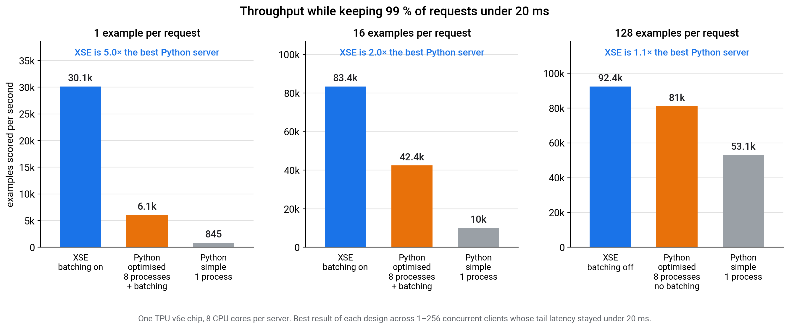
Авторское сравнение throughput XSE; переносимость зависит от модели и стенда. Источник: Google.Механизм, основания и следующий шаг
Что показали / как устроено
Однократное выполнение модели и подготовка артефактов отделены от обработки запроса. Это ясная граница применения движка, а не предложение заменить любой autoregressive server.
Ограничение
Заявленные поставщиком ускорения 2–5× не сопровождаются достаточным протоколом для переноса на свою нагрузку. Длинная autoregressive generation требует другой организации serving.
Для моей работы
Для коротких моделей полезно профилировать orchestration overhead отдельно от времени kernels.
Следующий шаг
Сравнить p50/p99, throughput и cold start на одинаковой модели и железе; учитывать стоимость экспорта и поддержки артефактов.
Together Compiler: persistent engine вместо перезапуска при поиске
Together Compiler ускоряет итерации компиляции и поиска kernels через постоянно работающий engine с заменой forward pass. Материал показывает, как время экспериментального цикла влияет на практическую оптимизацию inference.
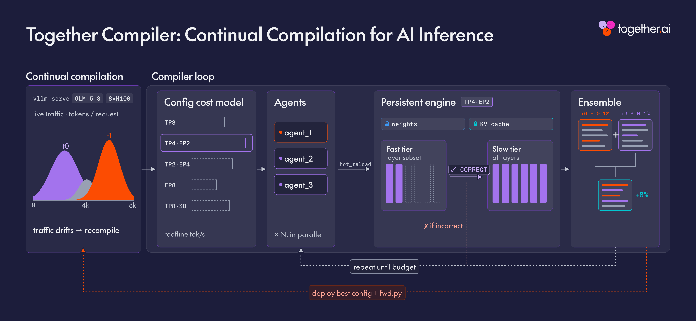
Persistent engine и замена forward pass в цикле компиляции. Источник: Together AI.Механизм, основания и следующий шаг
Что показали / как устроено
Быстрый предварительный поиск кандидатов отделён от полной проверки. В статье приведены авторские результаты до 2,6× throughput и сокращение запуска engine с 467 до 9 секунд.
Ограничение
Это разные метрики: запуск engine не равен latency запроса. Здесь прочитана статья, а не независимо воспроизведён полный эксперимент; выигрыш зависит от модели и hardware.
Для моей работы
Стабильная среда исполнения полезна при многократной проверке вариантов kernels, если замена не нарушает корректность и состояние.
Следующий шаг
Измерить полный цикл compile/search/verify на своей модели; отдельно сверить численную корректность и стоимость разогрева.
JamInfer и JamRL: один KV-cache, разные жизненные циклы
Подробный разбор связывает continuous batching, paged KV, prefix cache и reinforcement learning. Особенно полезна явная граница: кеш принадлежит конкретной версии весов и должен инвалидироваться при обновлении.
Механизм, основания и следующий шаг
Что показали / как устроено
JamInfer описан как inference engine, JamRL — как отдельный цикл обучения и rollout. В нём важно различать mask токенов policy и идентификаторы сегментов, а также учитывать CPU-offload страниц.
Ограничение
Расчёты в статье объясняют устройство, но не заменяют воспроизводимый benchmark. Disaggregated serving не заявлен поддержанным; нельзя переносить свойства одного runtime на другой.
Для моей работы
Разбор помогает найти ошибки согласованности между rollout, обновлением весов и повторным использованием префиксов.
Следующий шаг
Протрассировать одну итерацию RL: версия весов, создание KV, offload и инвалидирование; добавить проверку отсутствия старых страниц после update.
OCRia: ускорение начинается с профиля bandwidth и metadata
Команда OCRia разбирает смешанную квантизацию, speculative decoding и издержки сборки metadata. Полезен путь от профиля GPU к конкретным изменениям в GDN и запуске kernels.
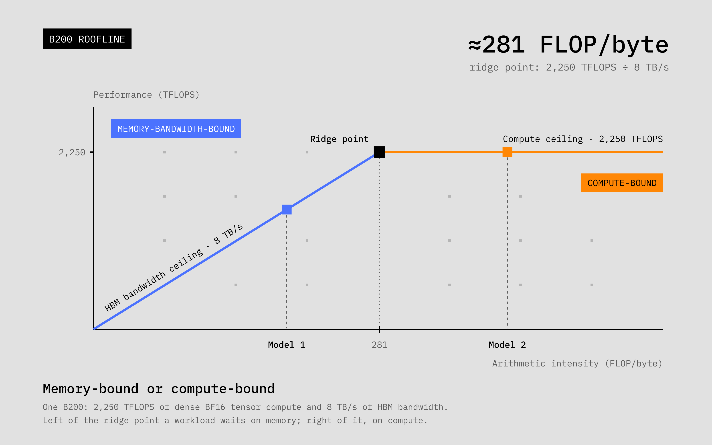
Профиль OCRia: соотношение вычислений и пропускной способности памяти. Источник: LlamaIndex.Механизм, основания и следующий шаг
Что показали / как устроено
Авторы сообщают о росте примерно с 285 до 2800 токенов/с на одном B200 для своей OCR-нагрузки. Вклад включает BF16/FP8/NVFP4, DFlash2, ReplaySSM и fusion, сокративший metadata work до одного GPU launch за шаг.
Ограничение
Полного протокола итогового сравнения и таблицы качества нет; промежуточные режимы batch различаются. Это не доказательство десятикратного уменьшения latency, и изменения ещё не все доступны upstream.
Для моей работы
Для длинного OCR-вывода нужно отдельно измерять memory bandwidth, verification и CPU/GPU metadata.
Следующий шаг
На своих документах проверить качество распознавания, batch/concurrency, throughput и p99; не складывать результаты разных режимов.
Классификатор Airbnb: когда fine-tuning окупает выделенный GPU
Airbnb сравнила API и дообученные открытые модели для внутренней классификации. Результат интересен вместе с объёмом разметки, правилами выбора порога и зависимостью стоимости от реальной нагрузки.
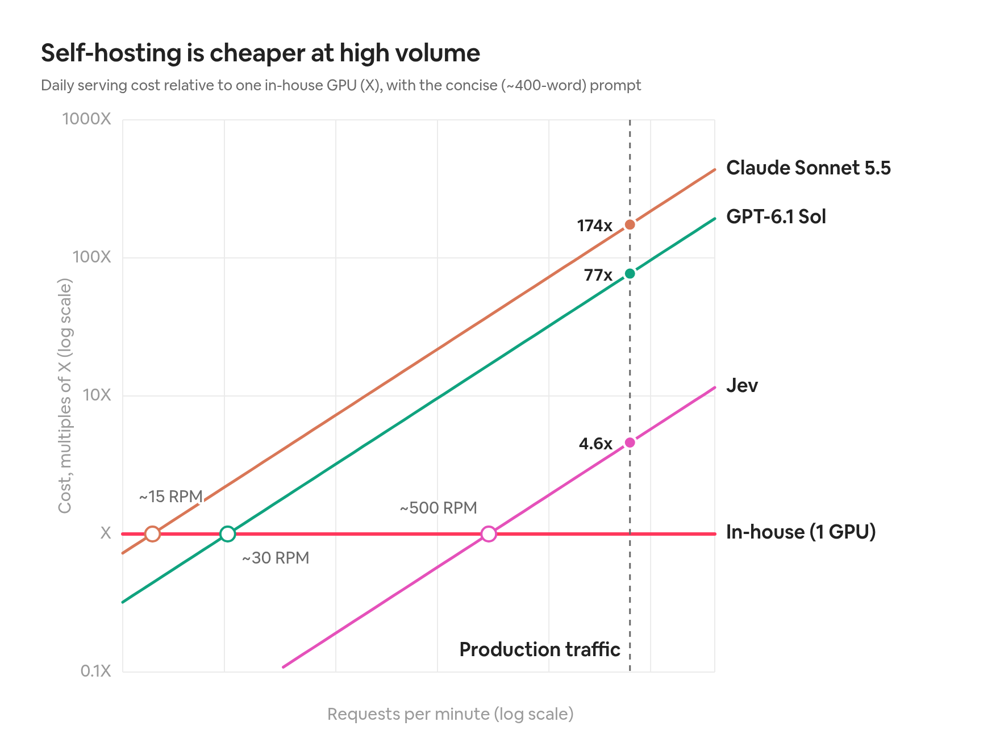
Модель стоимости Airbnb в зависимости от RPM: ниже порога API может быть дешевле GPU. Источник: Airbnb.Механизм, основания и следующий шаг
Что показали / как устроено
На 10 000 взвешенных held-out примеров дообученная Gemma4-E2B дала F1 0,902 против 0,563 до обучения; авторы сообщают медиану 35 мс. Serving: vLLM 0.28, RTX Pro 6000, BF16 для моделей до 12B.
Ограничение
Нужны сотни тысяч доменных примеров. Порог следует выбирать на validation, а не итоговом test. Модель стоимости использует октябрьские цены и cache hit 71%; ниже примерно 15–30 RPM API дешевле выделенного GPU.
Для моей работы
Для устойчивого массового классификатора небольшая специализированная модель может быть выгоднее универсального API.
Следующий шаг
Сравнить precision/recall при фиксированном требовании качества, p99 и полную стоимость при своём RPM, включая разметку и обучение.
MoEShift Alpha 3: подготовка MoE от выбора модели до local server
MoEShift держит часть экспертов MoE на SSD и исполняет их через Metal на Apple Silicon. Свежие Alpha 2 и 3 добавляют Qwen3.6 и первый запуск с подготовкой экспертов, проверкой конфигурации и восстановлением.
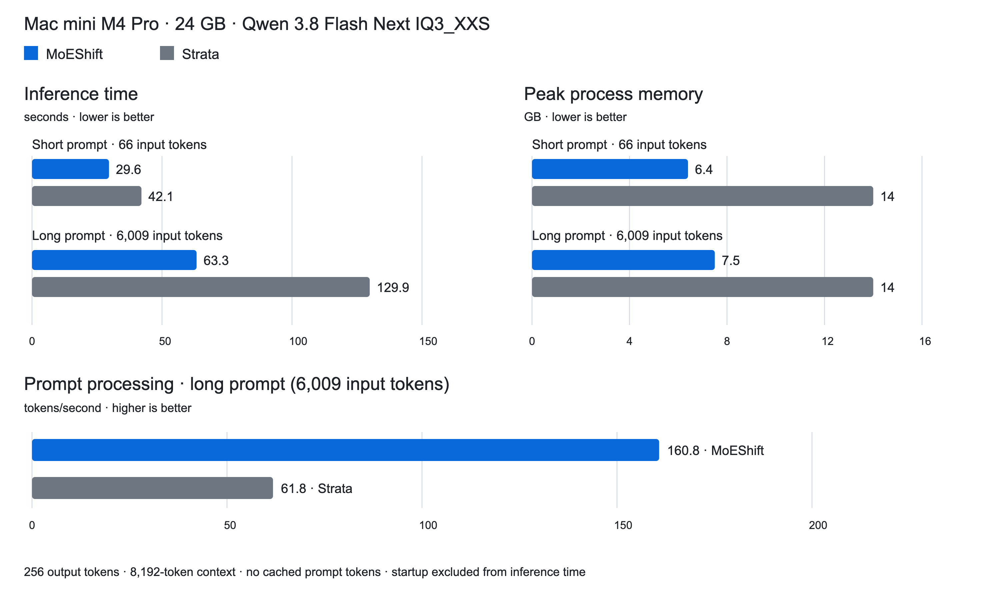
Прежнее сравнение Flash Next со Strata: M4 Pro 24 GB, 256 output tokens, startup исключён. Это контекст архитектуры, не benchmark Alpha 3. Источник: MoEShift.Механизм, основания и следующий шаг
Что показали / как устроено
Alpha 2 меняет бюджеты prompt/generation и protected LRFU-cache; Alpha 3 ведёт от выбора модели до сервера. Для Qwen3.6 в release указаны медианы 16,50/14,66 токена/с после warmup, три прогона по 512 выходных токенов.
Ограничение
Это alpha, проверенная на M4 Pro: один запрос одновременно, localhost. Peak memory в этом release не измерена. Старая диаграмма Flash Next не является новым benchmark Alpha 3.
Для моей работы
Подход полезен для локальных экспериментов с крупной MoE при ограниченной RAM и достаточно быстром SSD.
Следующий шаг
Проверить cold/warm запуск, память и latency на одинаковых prompts; отдельно прервать подготовку экспертов и проверить восстановление.
Tessera: короткое thinking по ходу задачи ещё не completion rate
Tessera-27B-B-CJK-RL продолжает обучение модели с компактным CJK-thinking. Карточка модели ценна явным разделением математики, отдельных agent turns и ещё не измеренного завершения coding tasks.
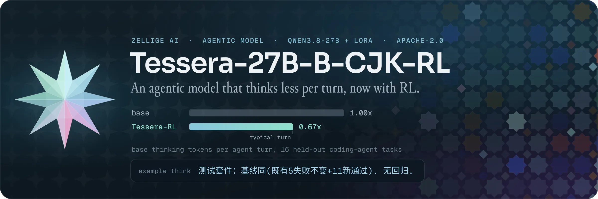
Tessera: thinking 0,67× base на отдельных frozen turns; это не completion rate. Источник: ZelligeAI.Механизм, основания и следующий шаг
Что показали / как устроено
Rank-32 LoRA и восемь RL updates дали 108/126 правильных ответов против 97 у предшественника на 63 математических задачах по две попытки. На 64 frozen states авторы получили thinking 0,67× base и 256/256 валидных tool calls.
Ограничение
Это авторские измерения, не end-to-end coding benchmark; 15 из 16 agent tasks использовались при развитии Tessera. Возможна контаминация математики; GGUF и NVFP4 не оценены.
Для моей работы
Меньше thinking tokens может снизить стоимость шага, но требует проверки результата всей задачи.
Следующий шаг
На новых собственных задачах сравнить completion rate, thinking tokens и валидность вызовов с base и предыдущей Tessera при одинаковом бюджете.